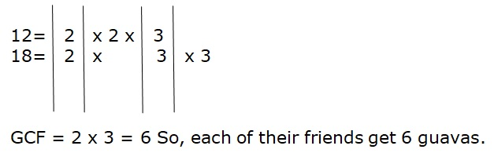
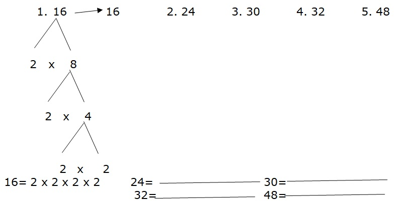
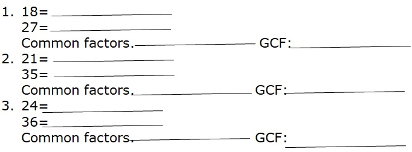

EXPLORE
Alvin has 12 guavas and Elorde has 18 guavas. Each of them will share the guavas to their friends. What is the greatest number of guavas each of their friends get if Alvin and Elorde will give the same number of guavas.
You find the Greatest Common Factor (GCF)n of 12 and 18. Study the solution below.
Method 1
By listing the factors of 12 and 18
Factors of 12, 1, 2, 3, 4, 6, and 12
Factors of 18, 1, 2, 3, 6, 9, and 18
By finding the common factors of 12 and 18
Common factors of 12 and 18, 1, 2, 3, and 6
By getting the Greatest Common Factor(GCF) of 12 and 18
The GCF of 12 and 18 is 6
Method 2
By writing each number as a product of its prime factors.
By multiplying the common prime fctors of 12 and 18.
Get Moving
A. Write each number as a product of its prime factors. Use factor tree. The first one is done for you.
B. List all the factors of each number. Then, find the common factors and greatest common factors of each pair of number.
Apply Your Skills
Read and solve each problem and write your answers in your answer sheet.
1. Ian and Isagani went fishing. Ian caught 21 fish and Isagani caught 28 fish. What is the greatest number of fish each could catch per hour, if they caught the same number of fish per hour?
2. Mr. Rojas has 2 pieces of wood for his scrabble board. One has a width of 18cm and the other one has 20 cm. If both sizes of wood are to be cut into scrabble tiles of the same width without wasting any wood, ehat is the greatest width into the woods can be cut?